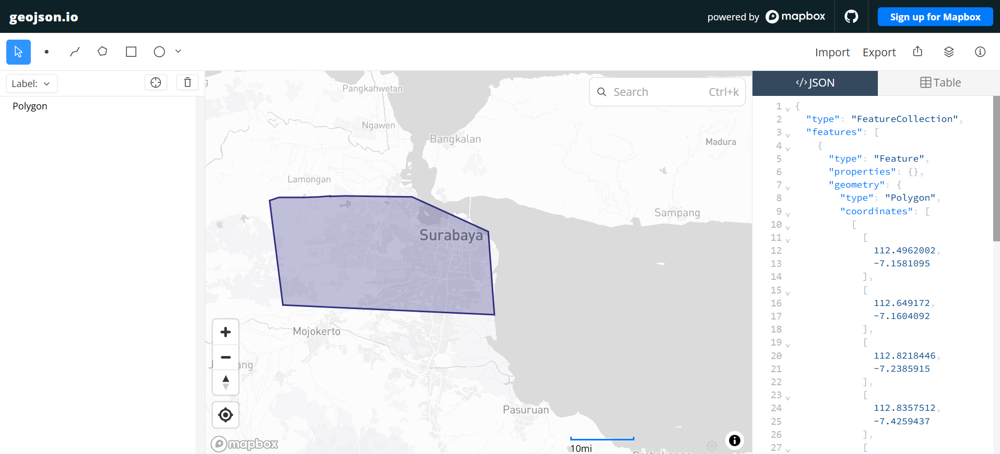

Wilayah Pengamatan#
1. Lokasi Pengamatan#
Wilayah yang digunakan dalam penelitian ini adalah Kecamatan Asem Rowo, Kota Surabaya, Provinsi Jawa Timur. Penelitian dilakukan untuk mengetahui karakteristik kualitas udara berdasarkan konsentrasi polutan CO, NO₂, dan SO₂.
Data yang digunakan berupa data deret waktu harian mulai 31 Agustus 2025 sampai 31 Agustus 2026.
Komponen |
Keterangan |
|---|---|
Kecamatan |
Asem Rowo |
Kota |
Surabaya |
Provinsi |
Jawa Timur |
Negara |
Indonesia |
Periode pengamatan |
31 Agustus 2025–31 Agustus 2026 |
Interval data |
Harian |
Jumlah tanggal |
366 hari |
Polutan |
CO, NO₂, dan SO₂ |
Metode pembatasan wilayah |
Polygon GeoJSON |
Tools pengambilan data |
openEO |
2. Visualisasi Wilayah#
Penentuan wilayah pengamatan dilakukan menggunakan polygon dalam format GeoJSON. Polygon tersebut digunakan sebagai batas geografis dalam proses pengambilan data polutan.
Gambar berikut menunjukkan visualisasi polygon GeoJSON pada wilayah Kota Surabaya yang digunakan sebagai acuan penentuan area penelitian.


Fig. 1 Visualisasi polygon GeoJSON wilayah pengambilan data di Kota Surabaya.#
Setelah wilayah Kota Surabaya ditentukan, area pengamatan difokuskan pada Kecamatan Asem Rowo menggunakan batas koordinat yang telah ditentukan.
3. Batas Koordinat Asem Rowo#
Batas wilayah pengamatan Kecamatan Asem Rowo ditentukan berdasarkan nilai longitude dan latitude berikut:
Batas Koordinat |
Nilai |
|---|---|
Longitude minimum |
112.65905874 |
Longitude maksimum |
112.717742297 |
Latitude minimum |
-7.258364782 |
Latitude maksimum |
-7.218571725 |
Berdasarkan nilai tersebut, bounding box wilayah pengamatan dapat dituliskan sebagai:
[ [112.65905874,\ -7.258364782,\ 112.717742297,\ -7.218571725] ]
Urutan nilai bounding box tersebut adalah:
[
[\text{longitude minimum},\ \text{latitude minimum},
\text{longitude maksimum},\ \text{latitude maksimum}]
]
Longitude menunjukkan posisi wilayah dari arah barat ke timur, sedangkan latitude menunjukkan posisi wilayah dari arah utara ke selatan.
4. Penggunaan GeoJSON#
GeoJSON merupakan format penyimpanan data geografis berbasis JSON. Format ini dapat digunakan untuk menyimpan titik, garis, polygon, serta informasi lokasi lainnya.
Pada penelitian ini, GeoJSON digunakan untuk membentuk polygon batas wilayah pengamatan. Berkas batas wilayah yang digunakan adalah:
wilayah_asemrowo.GeoJson
Berkas tersebut digunakan dalam proses pengambilan data melalui openEO. Polygon GeoJSON membantu memastikan bahwa data yang diambil sesuai dengan area penelitian dan tidak mencakup wilayah yang terlalu luas.
Struktur umum data GeoJSON yang digunakan adalah sebagai berikut:
{
"type": "FeatureCollection",
"features": [
{
"type": "Feature",
"properties": {
"kecamatan": "Asem Rowo",
"kota": "Surabaya",
"provinsi": "Jawa Timur"
},
"geometry": {
"type": "Polygon",
"coordinates": []
}
}
]
}
Bagian geometry menunjukkan bahwa bentuk wilayah yang digunakan adalah polygon. Sementara itu, bagian coordinates berisi kumpulan titik koordinat yang membentuk batas wilayah pengamatan.
Koordinat lengkap tetap tersimpan dalam berkas wilayah_asemrowo.GeoJson.
5. Fungsi Pembatasan Wilayah#
Penggunaan polygon GeoJSON dalam penelitian ini mempunyai beberapa fungsi, yaitu:
Membatasi proses pengambilan data pada wilayah yang telah ditentukan.
Memastikan data yang dianalisis sesuai dengan Kecamatan Asem Rowo.
Menghindari tercampurnya data dengan wilayah lain.
Membuat proses pengambilan data lebih terarah.
Mendukung analisis kualitas udara berdasarkan wilayah.
Mempermudah proses visualisasi lokasi pengamatan.
6. Data Polutan yang Diambil#
Data kualitas udara yang diambil terdiri atas tiga jenis polutan, yaitu CO, NO₂, dan SO₂.
Polutan |
Nama Lengkap |
Keterangan |
|---|---|---|
CO |
Karbon monoksida |
Gas yang umumnya dihasilkan dari proses pembakaran tidak sempurna |
NO₂ |
Nitrogen dioksida |
Polutan yang dapat berasal dari kendaraan bermotor dan proses pembakaran |
SO₂ |
Sulfur dioksida |
Polutan yang dapat berasal dari pembakaran bahan bakar yang mengandung sulfur |
Data ketiga polutan tersebut diambil dalam bentuk deret waktu harian selama satu tahun. Periode pengambilan data dimulai pada 31 Agustus 2025 dan berakhir pada 31 Agustus 2026 sehingga menghasilkan 366 tanggal pengamatan.
Data yang diperoleh selanjutnya digunakan untuk proses:
Eksplorasi data.
Pemeriksaan missing value.
Deteksi outlier.
Imputasi data.
Visualisasi deret waktu.
Ekstraksi fitur TSFEL.
Reduksi dimensi menggunakan PCA.
Clustering menggunakan K-Means.
7. Kesimpulan#
Kecamatan Asem Rowo digunakan sebagai wilayah utama dalam penelitian kualitas udara ini. Penentuan wilayah dilakukan menggunakan polygon GeoJSON dan batas koordinat geografis.
Penggunaan batas wilayah membantu memastikan bahwa data CO, NO₂, dan SO₂ yang dianalisis sesuai dengan lokasi penelitian. Data tersebut kemudian digunakan untuk analisis deret waktu, preprocessing, ekstraksi fitur, reduksi dimensi, dan clustering.